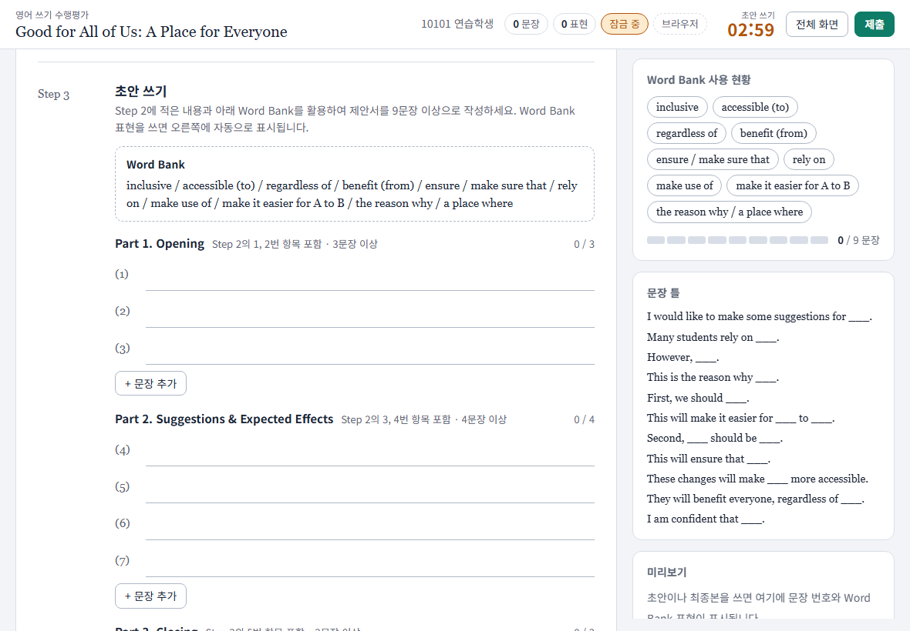

영어 쓰기 수행평가 페이지
학생이 태블릿에서 영어 글쓰기 수행평가를 두 번에 나눠 치르는 웹 페이지입니다. 제출물은 선생님 구글 드라이브에 PDF와 시트로 쌓입니다. 실제 수업에 쓰던 것을 값을 비워 본보기로 만들었습니다.

어떻게 진행되나요
| 1회차 | 예시 문단 분석 → 브레인스토밍(이때는 검색 허용) → 초안 쓰기(잠금) → 초안 제출 |
|---|---|
| 2회차 | 같은 학번·이름으로 로그인하면 초안이 그대로 열리고(수정 불가), 최종본만 씁니다(잠금) → 제출 |
| 잠금 단계에서 | 붙여넣기와 자동 완성이 막히고, 다른 앱·탭으로 나가면 횟수와 시각이 제출물에 기록됩니다. 단어 사전(단어 하나씩)만 허용됩니다. |
| 선생님 쪽 | 제출물은 반별 폴더에 PDF로, 진행 상황은 시트(총괄·반별 탭)와 교사 현황 화면에 보입니다. |
체험해 보기
설치 없이 학생 흐름을 끝까지 해 볼 수 있습니다. 체험 페이지는 서버에 연결되어 있지 않아, 쓴 내용이 이 기기에만 남습니다.
- 체험 페이지를 엽니다. 제한 시간을 조사 2분, 초안 5분, 최종 5분으로 줄여 두었습니다.
- 아무 학번(예:
10101)과 이름으로 시작합니다. - 조사 단계에서 초안 쓰기 시작을 누르고, 문장을 몇 개 쓴 뒤 제출합니다. 다른 탭으로 나갔다 오면 이탈이 기록되는 것도 볼 수 있습니다.
- 페이지를 새로 고치고 같은 학번·이름으로 다시 들어가면 2회차(최종본)가 열립니다.
처음부터 다시 하려면 로그인 화면 아래 교사 → PIN 0000 → 데이터 삭제. 체험 페이지에서는 사전, 교사 현황 화면, PDF 저장이 동작하지 않습니다.
내 수업에 쓰려면 (설치)
제출물을 받으려면 선생님의 구글 계정에 서버(Apps Script)를, GitHub에 학생 페이지를 올려야 합니다. 1시간쯤 걸리고, 대부분 Claude Code가 진행합니다.
준비
- 구글 계정, GitHub 계정
- PC에 VS Code, Git, Node.js LTS, Python 3, Claude Code
순서
- 압축 파일을 받아 풉니다.
- 그 폴더를 VS Code로 열고, 터미널에서
claude를 실행합니다. - 이렇게 말합니다: CLAUDE.md의 "처음 설치"를 진행해 줘.
Claude Code가 아래를 차례로 진행하고, 브라우저에서 눌러야 하는 것만 물어봅니다.
| 값 정하기 | token과 교사 PIN (받은 파일에는 CHANGE_ME, 0000으로 들어 있습니다) |
|---|---|
| 서버 올리기 | clasp 설치, 구글 로그인, Apps Script 프로젝트 연결, 코드 올리기 |
| 권한 승인 | 편집기에서 testSubmit을 한 번 실행합니다. 내 드라이브에 제출물 폴더와 시트가 만들어집니다. |
| 웹 앱 배포 | 나온 주소를 학생 페이지와 교사 화면에 넣습니다. |
| 페이지 올리기 | GitHub 저장소를 만들고 Pages를 켭니다(/docs 폴더). |
| 마무리 | 교사 현황 화면 열쇠 만들기, 테스트, 첫 배포 |
설치 중에 만나는 것
- 권한 승인 때 "확인되지 않은 앱" 경고가 뜨고, 드라이브·메일·외부 연결 권한을 한꺼번에 묻습니다. 본인 계정에 본인이 올린 스크립트라서 뜨는 것입니다.
- 학교 구글 계정은 "모든 사용자"에게 웹 앱을 여는 것이 관리자 설정으로 막혀 있을 수 있습니다. 막히면 개인 계정을 쓰세요.
- 이 설치 순서는 새 계정에서 처음부터 끝까지 돌려 보지는 못했습니다. 막히는 단계가 있으면 알려 주세요.
과제 내용 바꾸기
docs/index.html 맨 위의 CONFIG 한 곳만 고치면 됩니다. Claude Code에게 "예시 문단을 이걸로 바꿔 줘"처럼 말로 시켜도 됩니다.
title, subtitle | 과제 제목 |
|---|---|
assignmentId | 과제 이름표. 과제를 새로 낼 때마다 다른 값으로 바꿉니다. 안 바꾸면 같은 주소에서 지난 과제의 상태가 그대로 열립니다. |
phases | 단계별 제한 시간(분) |
requiredSentences 등 | 필요한 문장 수, Word Bank 표현 수 |
example, step1Parts | 예시 문단과 구분 항목 |
step2Items, ideaBank | 브레인스토밍 항목과 참고 목록 |
step3Parts | 초안 구성과 문장 틀 |
wordBank | 표현과 자동 감지 규칙 |
들어 있는 예시 과제(제목, 예시 문단, Word Bank)는 본보기입니다. 본인 수업 내용으로 바꿔 쓰세요.
수업 운영
- 학생은 주소(또는 QR)로 들어와 학번과 이름으로 로그인합니다. 글은 1분마다 서버에 자동 저장되어, 기기가 바뀌어도 이어집니다.
- 수업 중에는 교사 현황 화면에서 반별로 누가 어느 단계인지, 이탈이 있었는지 봅니다.
- 시간 추가, 잠금 해제, 제출 취소는 학생 화면 아래 교사 버튼(PIN)으로 합니다.
- 코드를 고쳤으면 수업 전날 배포하고, 태블릿으로 로그인 화면 아래 버전 글자를 확인합니다. 당일 아침에는 배포하지 않습니다.
- 문제가 보이면 제출명단 시트의 오류 탭을 먼저 봅니다.
알아 둘 것
- 교사 PIN과 token은 페이지 소스에서 누구나 볼 수 있습니다. 실수 방지용일 뿐, 보안 장치가 아닙니다.
- 제한 시간은 주소 뒤에 값을 붙이면 바뀝니다. 학생이 주소창을 쓰지 못하게 하려면 홈 화면 앱으로만 열게 하고(
requireHomeScreen) 기기에서 앱 고정을 쓰세요. - 학번은 학년 1자리 + 반 2자리 + 번호 2자리(예: 10315)를 전제합니다. 반별 폴더와 탭이 이 규칙으로 나뉩니다.
- 영어 글쓰기 전용입니다. 문장 수 세기, 한글 입력 감지, 사전이 모두 영어를 전제합니다.
- 1인 1기기를 전제합니다. 공용 기기에서 학번을 잘못 넣으면 그 기기에 남아 있던 다른 학생의 글이 열릴 수 있습니다.
- 학생 이름·학번·글이 선생님 구글 드라이브에 저장됩니다. 학교 개인정보 지침을 먼저 확인하세요.